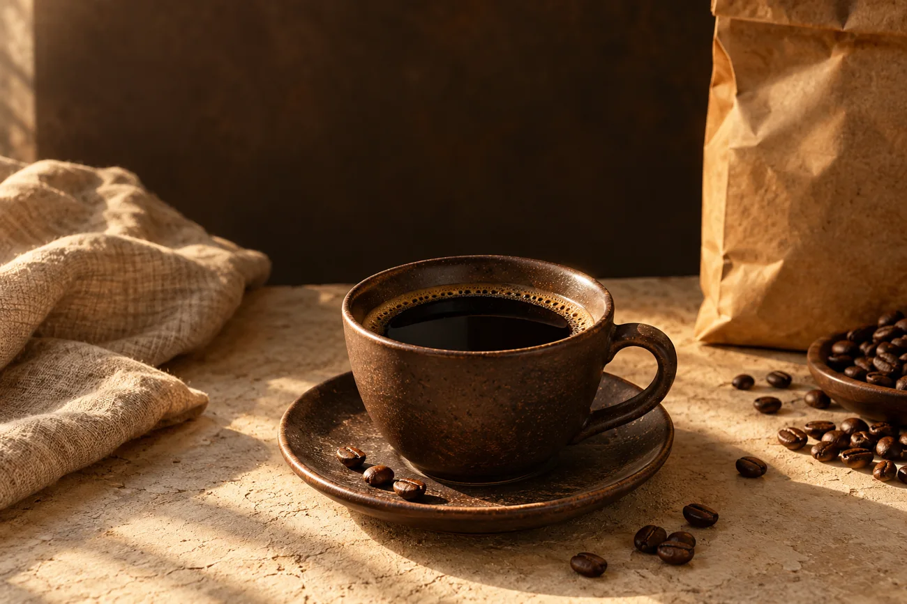
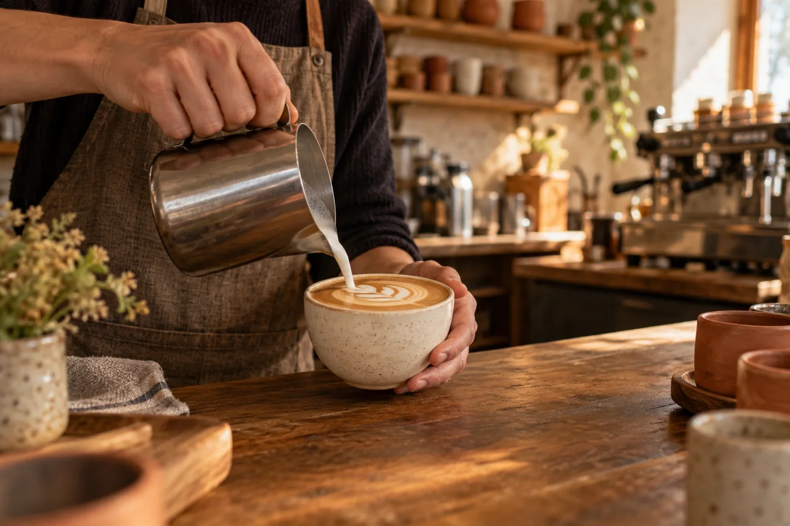

По Казани
Доставка — за 2 часа. Клиент должен подтвердить зону доставки, часы и условия.
Стоимость нужна от клиента.
СВОЯ ОБЖАРКА · КАЗАНЬ
Обжариваем раз в 7 дней.
Чтобы ваше утро начиналось с аромата,
а не с компромиссов.
С теплом, «Зерно»График обжарки — подтвердить

01 / ЗЕРНО ДОМОЙ
От шоколадной классики до цветочных нот.
Одна пачка — много хороших утр.
Демонстрационный ассортимент: страны, регионы и цены — примеры для согласования. Наведите на пачку или нажмите «О вкусе», выберите 250 г, 500 г или 1 кг и рассмотрите модель.
02 / МАЛЕНЬКИЙ КОФЕЙНЫЙ ГИД
Три простых вопроса — и у вас есть
отправная точка для выбора зерна.
Перемещайте зерно по шкале — исследуйте характер обжарки.
Светлая — больше цветочных и фруктовых оттенков.
Тёмная — более выраженные жареные ноты.
04 / ЗАЙДИТЕ НА ЧАШКУ
Попробуйте кофе за барной стойкой.
А потом выберите зерно для дома.

ОТ ЗЕРНА К ЧАШКЕ
Один вкус.
Много маленьких ритуалов.
ВАША ЧАШКА, ПО ШАГАМ
01 · Начнём с размера чашки
Объём зависит от выбранного напитка.
Выберите кофе в меню →
Пример меню · базовая порция S.
Выберите размер на кофейном аппарате.
Сначала выберите размер чашки, затем напиток.
05 / СЛОВА ГОСТЕЙ
За каждой чашкой — свой человек,
свой вкус и маленькая история.
10 вымышленных историй для показа оформления.
Открываешь пачку —
и утро уже
началось правильно.
Анна К.Пример отзыва · зерно для дома
06 / ОТ НАС — К ВАМ
Доставка — за 2 часа. Клиент должен подтвердить зону доставки, часы и условия.
Стоимость нужна от клиента.
Отправка СДЭКом до пункта выдачи.
Доступность, сроки и тарифы должен подтвердить клиент.
07 / ПАРА СЛОВ ДО ПЕРВОЙ ЧАШКИ
Про выбор, хранение и путь
от нашей обжарки до вашей кухни.
Начните с трёх вопросов в нашем кофейном гиде: как завариваете, какие вкусы любите и добавляете ли молоко. Подбор предложит примерный профиль, с которого удобно начать.
Доступность помола и его варианты должна подтвердить кофейня. Перед заказом укажите, как готовите кофе: турка, кофемашина и фильтр требуют разного помола.
Закрывайте пачку после использования и держите её вдали от влаги, прямого света и сильных запахов. Дату обжарки и рекомендации для конкретного зерна смотрите на упаковке.
Пока можно выбрать профиль и сохранить его в корзине. Приём заказов и реальные контакты ещё не подключены; форма проверяет поля и не отправляет сведения.
08 / ДО ВСТРЕЧИ
Адрес кофейни скоро появится здесь
Часы работы — уточняются
Маршрут скоро появится здесь.
Карта появится после добавления адреса.